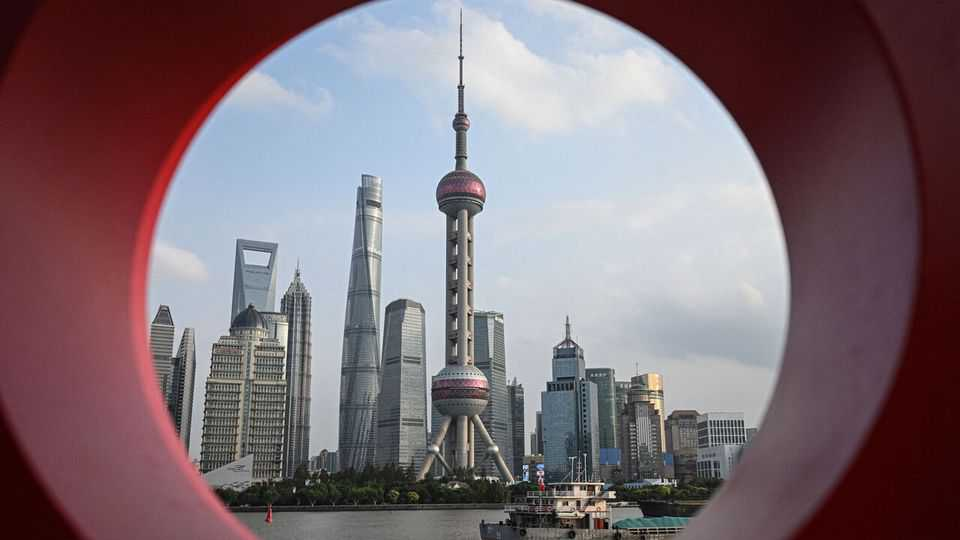
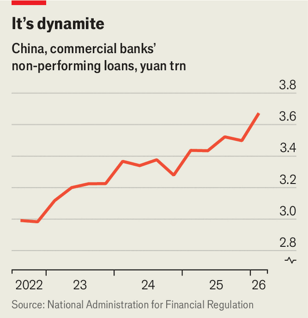

Is China’s debt-bomb squad about to blow up?
Firms tasked with defusing credit crises are getting into trouble

Aug 13th 2026
IN LATE JULY a court in China’s eastern Anhui province signed off on an unusual restructuring proposal. It concerns Guohou Asset Management, a financial firm originally set up to defuse debt bombs by picking up bad loans from troubled lenders. Guohou is the first member of China’s large debt-bomb squad to itself need defusing. It will not be the last.
Chinese financial regulators have for years been enlisting similar firms to clear a minefield of corporate debt. The first four dedicated “asset-management companies” (AMCs), as the bomb-disposal experts are known in China, were established in 1999 under the Ministry of Finance. Their task was to bail out the four biggest state-owned commercial banks. Each lender moved its most untenable loans (as well as its least competent staff) into its own AMC. The four “bad banks” were meant to gradually restructure and liquidate the bad loans, and then wind themselves down.
Instead they grew in size and number. By 2018 the combined balance-sheets of the four companies amounted to some 5trn yuan ($755bn at the time), placing them among the largest financial institutions in China. As bad debts mounted in the early 2010s, regulators also approved batches of “local AMCs”, usually limited to one province. More than 60 such local entities have been created so far. Most are owned by local governments and other state investors; a handful, including 12-year-old Guohou, are in private hands.
Instead of using their capital to strip bad loans from lenders’ balance-sheets, the AMCs began borrowing from banks at the same low rates as other state firms and lending at much higher ones to troubled companies. In effect, they turned themselves into lightly regulated investment banks, often catering to property developers that were booming at the time and have since toppled amid China’s housing crash.
More troubling, they also created a tidy sideline in helping lenders hide bad debt from regulators. Academic estimates suggest such activities were so widespread that by 2020 they would have concealed at least half, and possibly much more, of China’s non-performing loans. That year Huarong, the biggest and most aggressive AMC, blew up and required a $6.6bn state bail-out. Its chairman, Lai Xiaomin, was later executed for a long list of crimes. But this has not deterred AMCs from pursuing questionable tactics.
Documents from Guohou’s restructuring and insider analysis show that it mimicked many of these. In addition to picking up distressed assets, for example, it began making high-interest loans. It structured many of them to appear to be equity investments, which raise fewer red flags with regulators looking for concentration of debt risk. It also signed “drawer agreements” with banks, whereby it would purchase a lender’s non-performing loans just before these needed to be reported to regulators, only to sell them back shortly after and to pocket a fee. An investigation into the company found it had notched up operating losses for years and could not service its 13bn yuan in debts.

Such shenanigans suggest that Chinese banks’ non-performing loans may be much bigger than official figures suggest. On paper, they rose from 3trn yuan in 2022 to nearly 3.7trn in the first quarter of this year (see chart), though this is still a modest 1.5% of total assets. More bad loans, and bad AMCs, may surface as China’s rumbling property crisis further depresses the value of real estate, which many corporate borrowers offer as collateral.
Cinda, a large centrally owned AMC, said this month that it expected net profits in the first half of the year to fall by up to 70%. This may reflect the collapsing value of the assets that back its bad-debt portfolios. Smaller local AMCs may follow Guohou into insolvency. One in China’s north-eastern rustbelt was suddenly dissolved in 2020 after making a dodgy loan to a football club. Others have been downgraded by local credit-rating agencies and are on the brink of collapse.
Guohou is being restructured rather than wound down only thanks to interest from investors in its AMC licence. Regulators stopped handing these out last year. Those investors have not been disclosed. Whoever they are, they must have nerves worthy of bomb-disposal experts.■